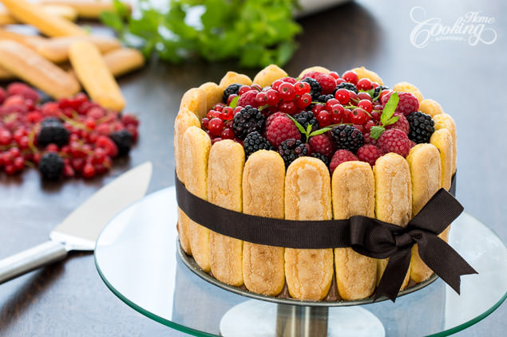
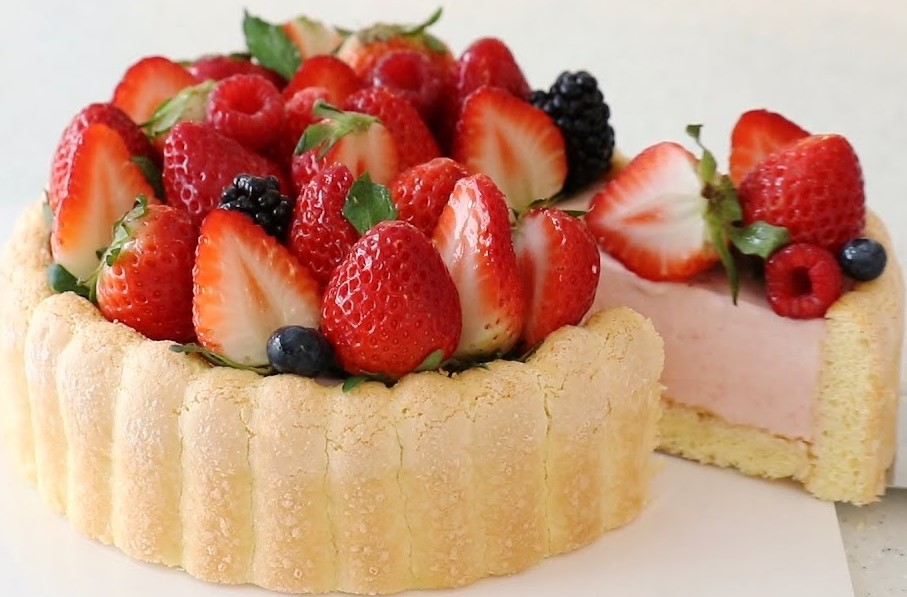

CHARLOTTE
Charlotte is a classic French dessert, often consisting of ladyfingers or sponge cake lined around a mold and filled with a rich cream, mousse, or fruit mixture. Its appearance is elegant, making it a favorite for special occasions. Variations like the Charlotte Russe and Charlotte aux Fraises showcase its versatility.

History of Charlotte
The origins of the Charlotte dessert date back to late 18th-century England, where it was first made as a pudding-like dish named after Queen Charlotte, wife of King George III. The original version was a baked dish made with bread, custard, and fruit.
In the 19th century, French chef Marie-Antoine Carême transformed the dessert into the refined version we know today, calling it Charlotte Russe. He replaced the bread with ladyfingers or sponge cake and added a rich cream filling, elevating the dish to haute cuisine status. It became especially popular in Russia, inspiring the name Russe.
Charlotte Recipe (Charlotte aux Fruits or Charlotte Royale)
Ingredients
For the Ladyfingers or Sponge Cake:
- 4 large eggs
- 1/2 cup (100 g) granulated sugar
- 1/2 cup (60 g) all-purpose flour
- 1/4 tsp salt
- Optional: Store-bought ladyfingers (if not baking sponge cake)
For the Filling:
- 1 cup (240 ml) heavy cream
- 1/2 cup (100 g) sugar
- 1 tsp vanilla extract
- 2 tsp gelatin (optional, for stability)
- 2 cups fresh fruit (e.g., strawberries, raspberries, or a mix)
- Optional: Fruit puree for added flavor
For Assembly:
- A springform pan or a Charlotte mold
- Extra fruit or whipped cream for garnish
Instructions
Step 1: Prepare the Ladyfingers or Sponge Cake
- Preheat the oven to 375°F (190°C). Line a baking sheet with parchment paper.
- Separate the eggs. Beat the egg yolks with sugar until pale and fluffy. In a separate bowl, whisk the egg whites until stiff peaks form.
- Gently fold the egg whites into the yolk mixture. Sift in the flour and salt, folding gently to retain the air.
- Pipe the batter into ladyfinger shapes or spread evenly on the baking sheet for a sponge sheet. Bake for 8-10 minutes or until lightly golden.
- Let cool and cut into strips if using a sponge sheet.
Step 2: Prepare the Filling
- If using gelatin, dissolve it in 2 tablespoons of warm water. Allow it to bloom.
- Whip heavy cream with sugar and vanilla extract until stiff peaks form.
- Fold in the gelatin or fruit puree (if using) to stabilize the filling. Gently mix in fresh fruit.
Step 3: Assemble the Charlotte
- Line the sides and bottom of a Charlotte mold or springform pan with ladyfingers or sponge strips, ensuring no gaps.
- Fill the mold with the cream and fruit mixture. Smooth the top and cover with additional sponge or ladyfingers.
- Chill in the refrigerator for at least 4 hours, preferably overnight, to allow the filling to set.
Step 4: Unmold and Garnish
- Carefully unmold the Charlotte by loosening the sides. Invert onto a serving plate if desired.
- Decorate with fresh fruit, whipped cream, or a light dusting of powdered sugar.

Tips for Perfect Charlotte
- Use Stable Cream Filling:
- Gelatin is optional but recommended if you want a firmer filling that holds its shape when sliced.
- Choose Fresh Fruit Wisely:
- Berries, peaches, or mangoes work beautifully, but avoid overly juicy fruits that could make the filling soggy.
- Perfect Sponge Consistency:
- Whether making ladyfingers or a sponge sheet, ensure your batter retains air for a light and fluffy texture.
- Chill Thoroughly:
- Give the Charlotte ample time to chill and set. Overnight refrigeration ensures the flavors meld and the structure holds.
- Add Layers of Flavor:
- Brush the ladyfingers or sponge cake with a light syrup (e.g., flavored with vanilla, citrus, or rum) for extra moisture and taste.
Best Season to Bake Charlotte
Charlotte is a year-round dessert but particularly shines in spring and summer, when fresh, juicy fruits like strawberries, raspberries, and peaches are in season. A light and fruity Charlotte is perfect for warm-weather gatherings. In the fall and winter, the dessert can be adapted by using poached pears, apples, or spiced fillings for a cozy touch, making it suitable for festive occasions like holiday dinners.